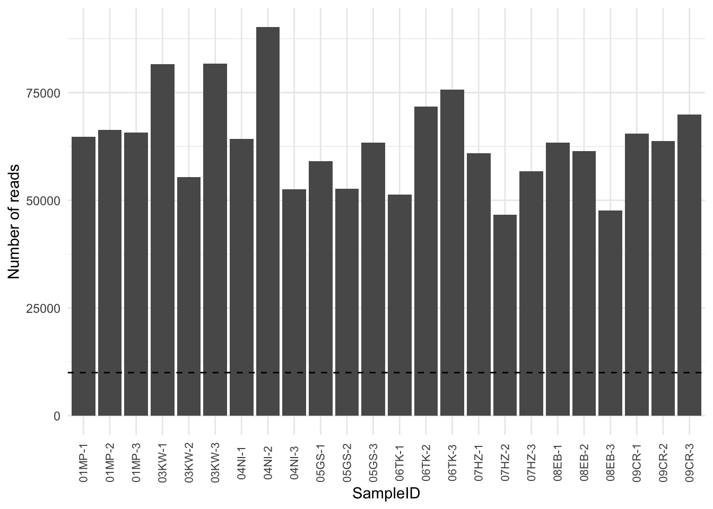
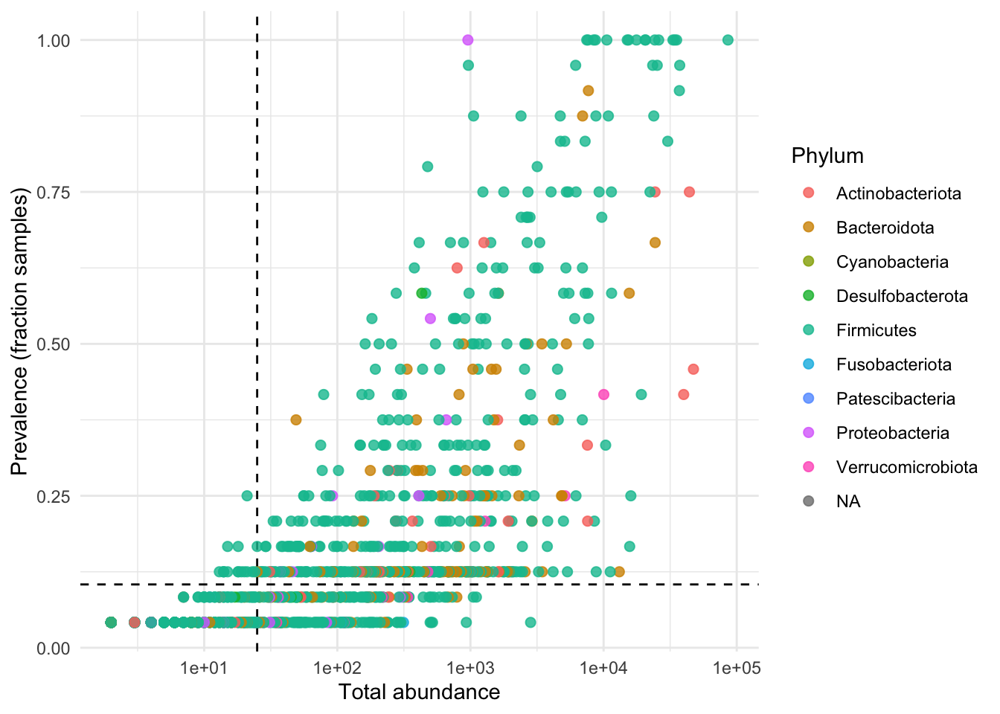

7 Phyloseq
The phyloseq R package is a powerful framework for further analysis of microbiome data. We now demonstrate how to straightforwardly import the tables produced by the dada2 pipeline into phyloseq.
7.1 Import
path <- "~/Desktop/microbiomeworkshop2022/"
## Read in files
seqtab <- readRDS(file.path(path, "results/seqtab_final.rds"))
taxa <- readRDS(file.path(path, "results/taxa_final.rds"))7.1.1 Exercise
Read the metadata file into R, called
info.Phyloseq needs the rownames of the metadata to match the sample names. How can you accomplish this?
Before creating your phyloseq object, familiarize yourself with the metadata. Are there any other changes you need to make?
It can sometimes be useful to clean up the sample names at this point - Illumina will add their own sample numbers to your sample names. You can do this by creating a new variable that doesn’t contain the information Illumina added:
info <- info %>% separate(SampleID, c("SampleID", "temp"), sep = "_S")Make a phyloseq object:
ps <- phyloseq(otu_table(seqtab, taxa_are_rows=FALSE), sample_data(info), tax_table(taxa))
ps## phyloseq-class experiment-level object
## otu_table() OTU Table: [ 1201 taxa and 24 samples ]
## sample_data() Sample Data: [ 24 samples by 5 sample variables ]
## tax_table() Taxonomy Table: [ 1201 taxa by 7 taxonomic ranks ]In order to look at the ASVs, we need to remove the sequences.
## Remove sequence names, rename to something manageable
asv_names <- vector(dim(otu_table(ps))[2], mode = "character")
for (i in 1:dim(otu_table(ps))[2]){
asv_names[i] <- paste("ASV", i, sep = "_")
}
taxa_names(ps) <- asv_names
colnames(otu_table(ps)) <- asv_names
rownames(tax_table(ps)) <- asv_namesYou can see that the phyloseq object has an otu_table(ASV table), sample_data and tax_table. You can use functions tax_table(), sample_data() and otu_table() to access the data.
7.2 Preprocess
7.2.1 Reads per sample
In general, the first step in pre-processing is to check how many reads you have per sample and remove any samples if they failed.
7.2.2 Exercise
Use either the rowSums() or colSums() function (or any other function of your choosing) to create a variable that contains the total number of reads per sample.
Once you have this, create a data frame containing this information:
counts <- data.frame(as(sample_data(ps), "data.frame"), TotalReads = sums)
head(counts)## SampleID temp SubjectID Treatment Timepoint TotalReads
## 01MP-1_S1_L001 01MP-1 1_L001 PS25 A 1 64763
## 01MP-2_S2_L001 01MP-2 2_L001 PS25 A 2 66378
## 01MP-3_S3_L001 01MP-3 3_L001 PS25 A 3 65698
## 03KW-1_S4_L001 03KW-1 4_L001 PS19 A 1 81586
## 03KW-2_S5_L001 03KW-2 5_L001 PS19 A 2 55418
## 03KW-3_S6_L001 03KW-3 6_L001 PS19 A 3 817707.2.3 Exercise
Create a visualization of these results (something like the one below) and decide if any of the samples need to be removed.

Other considerations: If there is a large amount of variation in the number of reads across samples (in general, more than 10-fold), you need to take steps to normalize the data.
7.3 Filtering
Here, we filter out ASVs (amplicon sequence variants) using two criteria: abundance and prevalence. First, compute the prevalence of each ASV by defining prevalence as the number of samples in which a taxon appears at least once:
prevdf <- apply(X = otu_table(ps), MARGIN = ifelse(taxa_are_rows(ps), yes = 1, no = 2), FUN = function(x){sum(x > 0)})
prevdf <- data.frame(prevalence = prevdf, total_abundance = taxa_sums(ps), tax_table(ps))Visualize prevalence:
gg <- ggplot(prevdf, aes(total_abundance, prevalence/nsamples(ps), colour = Phylum)) +
geom_point(size = 2, alpha = 0.8) + scale_x_log10() +
xlab("Total abundance") +
ylab("Prevalence (fraction samples)") +
theme_minimal()
gg7.3.1 Exercise
Use this visualization to determine your filtering parameters and define them as prevalence_threshold and count_threshold. Add these parameters to your plot using the functions geom_hline() and geom_vline().

Define taxa to filter:
keeptaxa <- rownames(prevdf)[(prevdf$prevalence > prevalence_threshold) & (prevdf$total_abundance > count_threshold)]Execute filter:
Important to keep your unaltered data!
psf <- prune_taxa(keeptaxa, ps)Compute relative abundance (of both raw and filtered data):
rel <- transform_sample_counts(ps, function(x) x / sum(x))
relf <- transform_sample_counts(psf, function(x) x / sum(x))